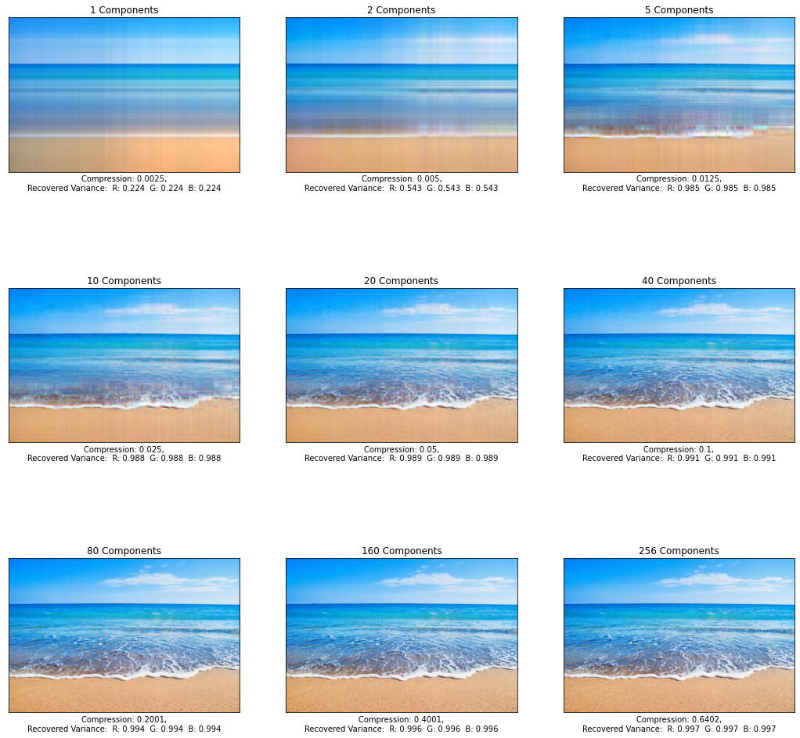
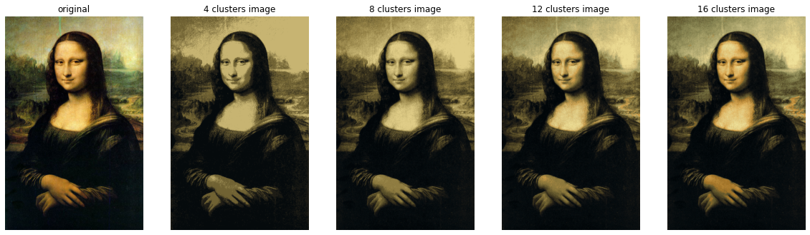

Ok, so...
In my most recent projects, I used various techniques I learned from my intro to ML class in order to compress images.
This first method utilizes SVD (Singular Value Decomposition). An image is essentially a matrix of pixel values. We then decompose the matrix into three different matrices using linear algebra techniques and essentially reduce the size of the matrices. For colored images, you store red, green, and blue values into three matrices and have to perform SVD for each matrix. Here are the results:
This next method uses GMM (Gaussian Mixture Modeling). It utilizes clusters and gives each point a probability the point is in each cluster. First, GMM estimates which clusters each point is most likely to be a part of. Afterwards, it figures out which cluster each point belongs to by calculating and maximizing the likelihood a point belongs to a cluster. Here are the results:
